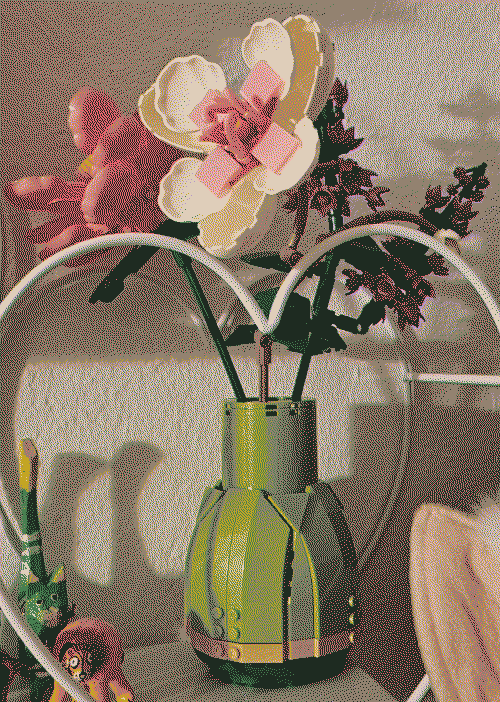
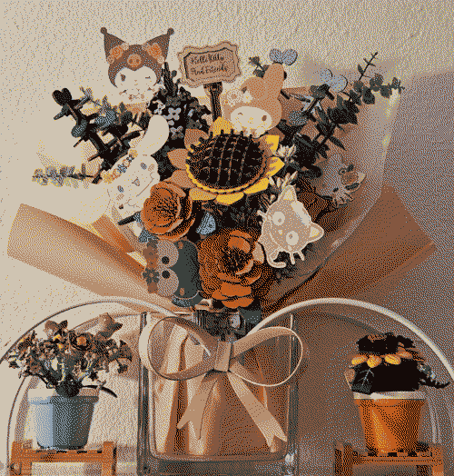
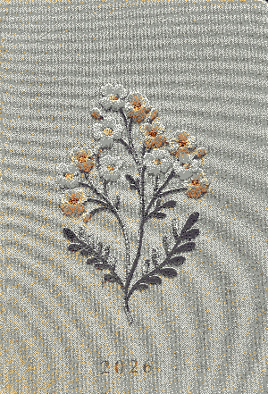
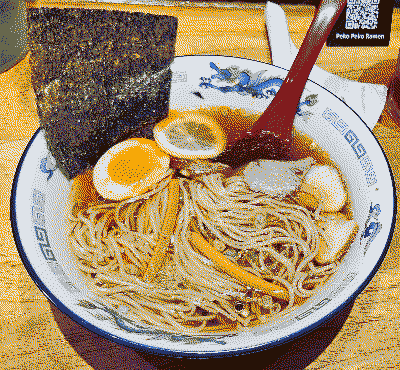
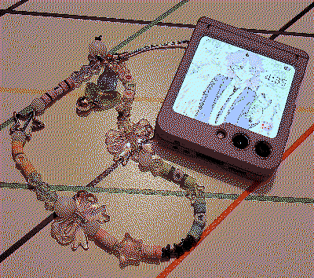

january
cleaning and re-organizing my apartment / started my 5th semester at uni. i'm basically halfway through my degree. kinda / went on my first walk of the year.

media
- fallout (season 2) | ::ongoing::
- yoshi's woolly world | ::ongoing::
- infinity nikki | ::finished::
finished the main quest! lets gooooo!
- kirby and the forgotten land | ::ongoing::
- pacific rim | ::four stars::
YOUVE NEVER SEEN PACIFIC FIM?!?!?!?
~ people when i tell them i've never seen pacific rim - fiona and cake (season 2) | ::finished:: | ::three stars::
- shoftlifters | ::five stars::
watched another hirokazu koreeda movie and my god this was just so beautiful. why is every film i've watched from this director so fucking painful??? i really loved monster but this story comes pretty close and the way it all unravels at the end.... i can't wait to fucking DIE when the live action movie of look back releases.
- project x | ::four stars::
i feel like i should have NOT enjoyed this movie as much as i did. i only watched it because of clips i've seen from it while looking up heads will roll remixes by the yeah yeah yeahs. like this video. i did not expect it to be this funny though AND i did not expect MY MANNNNNN thomas mann to be one of the protagonists either. i miss seeing him in stuff... making me want to rewatch me and earl and the dying girl but i need to be strong.
- 28 years later: the bone temple | ::five stars::
i had such a fucking blast with this movie.
- sweetpea | ::four stars::
been meaning to watch this bc i love ella purnell and i love it when women go insane. i should read the book. i should read MORE books.
- when the wind blows | ::three stars::
really nice animation. also kinda sad.



